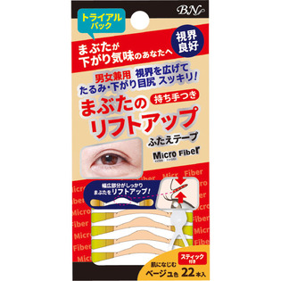

返回列表
产品名称：まぶたのリフトアップふたえテープ トラアイアル ベージュ

ビー・エヌ まぶたのリフトアップふたえテープ トラアイアル ベージュ ２２本
メーカー ビー・エヌ
JANコード 4965266155085
商品の特徴
●たるんだまぶたの皮膚をテープで引き上げます。
●視界を広げてたるみ・下がり目尻スッキリ。
●ベージュ・22本入り
成分・分量
【素材】
ポリエチレン、アクリル系粘着剤
用法及び用量
【使用方法】
１．付属のスティックでクセを付ける
２．テープをしっかり貼り付ける
３．ブラシの上側または下側を肌にあて、泡でやさしくなでるように洗ってください。
※強くこするとお肌を傷める原因になりますのでご注意ください。
４．水またはぬるま湯で洗顔料をしっかり洗い流してください。